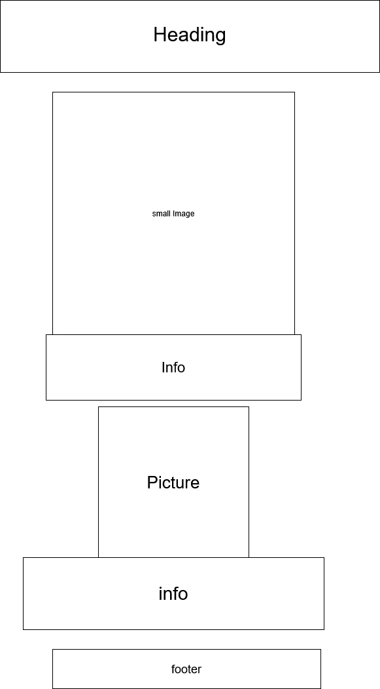
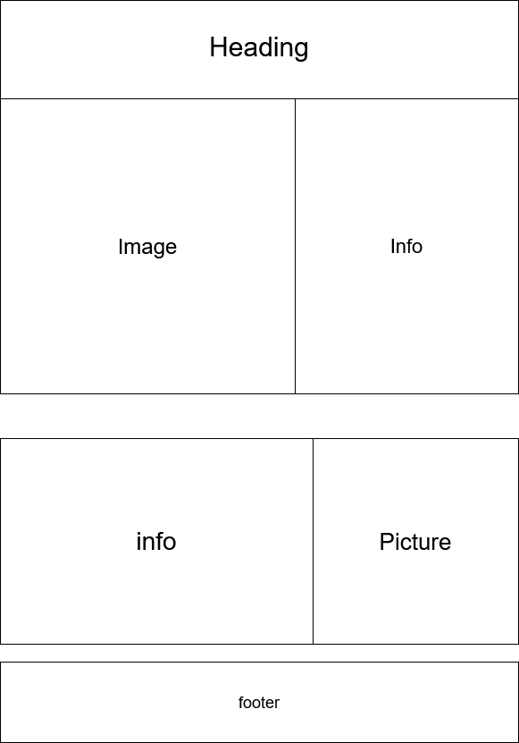

aboutthechurch.com
Site Purpose
The site will be contain information about the Church of Jesus Christ of Latter-Day Saints. Specifically, The content in it will be a page that is general about us information, another page will be a brief history of the Church, and the final page will be a contact us page.
Scenarios
What is the Church of Jesus Christ of Latter-Day Saints?
Who runs it?
How did it come to be?
Color Schema
The color Schema will have this shade of blue: rgb(1, 1, 70). it will also contain this shade of orange: rgb(202, 131, 0).
Typography
I will simply be using the Arimo font. I will use it for the entire page, with headings having a higher weight.
Wireframes
the Mobile view will be:

The desktop view will be:
